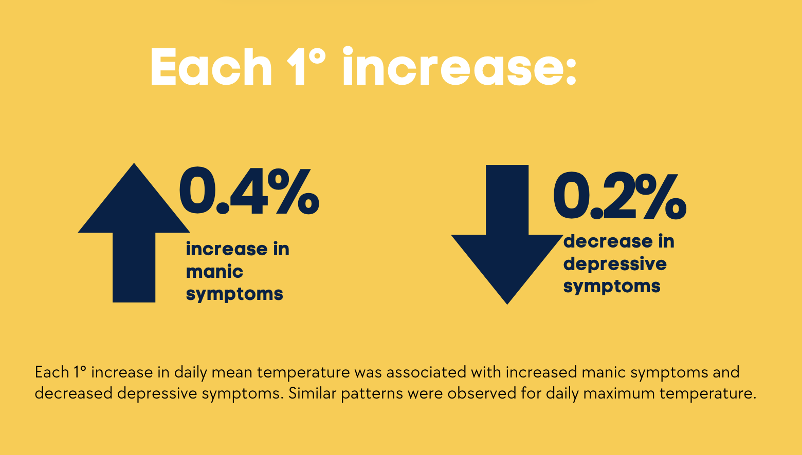

Figure 1: Gustave Courbet - The young ladies on the bank of the Seine (1856)
Figure 1: Gustave Courbet - The young ladies on the bank of the Seine (1856)
On days where it feels too hot to move, we may want to join the young ladies longing on the banks of the Seine, but how do changes in temperature affect symptoms of mental health problems?
Some previous studies have found that extreme heat exposure may negatively impact mental health, with lower levels of well-being and higher suicide rates during heat waves.
However, these studies have often relied on crude temperature measurements (aka low spatial resolution). For example, this study looked at suicide rates during heat waves at a country level.
We wanted to look at the link between temperature and symptoms of depression and mania.
Study population: We used data from juli, a smartphone app designed to support people with chronic conditions. Participants who have downloaded the app are able to track symptoms. We included all those who reported physician-diagnosed depression or bipolar disorder.
All participants were active users of juli between July 2021 and March 2023. All were adults (18 or older) and had consented for their aggregate data to be used for research.
Exposure - air temperature: Outdoor air temperature in degrees Celsius (◦C) and other weather information was collected using ambee, an API software, which collected 5-by-5 km geospatial grid based on the participant’s geolocation. The specific location was deleted in order to protect participant privacy, and we had access to the de-identified meteorological data. We calculated the mean and maximum temperature in the two weeks prior to completing the symptom scales.
Outcome - depressive symptoms and manic symptoms
Depressive symptoms cohort (n=4,000): Participants who reported physician diagnosed depression or bipolar disorder were asked to complete the Patient Health Questionnaire (PHQ-8), which includes 8 questions about symptoms of depression in the past two weeks. Participants were prompted to complete the questionnaire every two weeks. Participants who completed at least 1 PHQ-8 were included in the depressive symptoms cohort
Manic symptoms cohort (n=2,132): Participants who had reported physician-diagnosed bipolar disorder were invited to complete the Altman Self-Rating Mania Scores (ASRM), a 5-item scale that measures symptoms of mania. Participants were included in the manic symptoms cohort if they had completed at least 1 ASRM questionnaire.
Confounders: We adjusted for gender, humidity, sunshine, and air pollution.
Analysis: We used negative binomial regression models for this analysis. We used mixed effects models with a random effect. Mixed effects models are able to accommodate individuals with varying numbers of observations (e.g. some participants may have 1 PHQ-8 while others may have completed the scale multiple times). We included the random effect to account for clustering within individual (e.g. the PHQ-8 score within one individual over time would be more similar than the PHQ-8 score in a different individual).
We calculated exponentiated coefficients and 95% confidence intervals from the negative binomial models, representing the % change in symptom scores for each 1◦C increase in temperature.
We found that higher mean and maximum temperatures were associated with lower depressive symptoms and higher manic symptoms.
For each 1◦C increase, depressive symptoms reduced by 0.2%, and manic symptoms increased by 0.4%.

As temperature rose, depressive symptoms improved while manic symptoms worsted.
While the effect size was small (each 1◦C increase corresponding to a slight improvement in depressive symptoms and slight worsening of manic symptoms), this is meaningful at the population level, as in periods of extreme heat, several degrees increase would have a substantial impact on population-level symptoms of mental health problems.
You can read the full paper here Journal of Affective Disorders.
You can find the pre-registered protocol on Open Science Framework and the preprint version on medRxiv.
This analysis was led Dr Pip (Philippa) Clery, an academic clinical fellow and psychiatry trainee. Her excellent research was awarded a prize at the Royal College of Psychiatrists conference. I am sure we will continue to see brilliant things from her in the coming years.